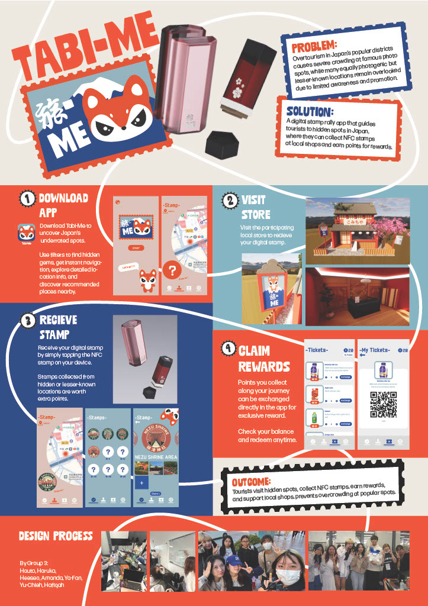

TABI-ME（旅-ME）
ISDW Group3
課題点：
日本の人気エリアにおけるオーバーツーリズムにより、有名な写真スポットでは深刻な混雑が発生している一方で、同じように魅力的で写真映えするにもかかわらず、認知やプロモーションが不十分な場所が多く見過ごされています。
解決策：
日本各地の隠れたスポットへ観光客を案内し、地域の店舗でNFCスタンプを集めながらポイントを獲得し、報酬と交換できるデジタルスタンプラリーアプリです。